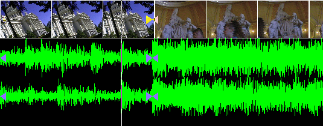
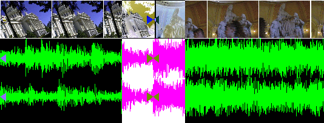
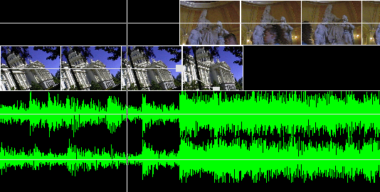

Then you select the region between the two edits

Select Video->feather edits to commence the dissolve operation. This asks you for a number of frames to extend the dissolve. With the number of frames entered, you now get a dissolve when you play the selection. To remove the dissolve go back to Video->feather edits and enter 0 for the frame duration.
The Feather edits operation is identical to if you created the following timeline. Here the bottom scene faded out after the top scene began.
